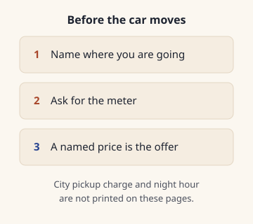

Marrakech petit taxis
Ask for the meter before the car moves. No city pickup charge or night hour is published. Stations and the shared ride to other towns are.
Ask for the meter before the car moves, and settle any named price before a bag goes in the boot.
No pickup charge, no price per kilometre and no night hour is published for a ride that stays in town.
The English tourist-office page says city taxi rates are regulated and taxis have meters Source-checked 26 Oct 2026 Sources. The French page opened from it does not say taxis have meters Source-checked 26 Oct 2026 Sources.
When a meter is on, a 26 July 2012 Source-checked 26 Oct 2026 Sources industry order says it should calculate and display the price from the distance, the time, or both Source-checked 26 Oct 2026 Sources. It does not give the Marrakech rate.
Stations are named near the Koutoubia, at Sidi Mimoun and at Bab Doukkala Source-checked 26 Oct 2026 Sources. A shared car to a nearby town leaves once the car is full Source-checked 26 Oct 2026 Sources. Say you are staying in town if that is the car waiting.
Day and night figures for the airport taxi are on Marrakech airport to the medina. Dirhams are Cash and ATMs at Marrakech airport. A phone line is SIM card at Marrakech airport.
Last updated 26 Oct 2026.
Written by Omar Oujoud in Casablanca. Research drafting is AI-assisted; observations are recorded in person. How we check
Jump to what’s still being checked · sources
How we checked
The national tourist office English transport page was opened in a browser on 26 October 2026, after its security check. In its own words: "Rates are regulated and all taxis have meters." The language control on that page opened a French page at a different address. That French page says a taxi, a bus or a tram can be used inside a city, and it limits the tram to Casablanca and Rabat. It does not say rates are regulated, and it does not say taxis have meters Source-checked 26 Oct 2026 Sources. A separate French getting-around page, and the English page beside it, name a taxi only as one way to travel, including at an airport exit. Neither adds a meter, a colour or a fare. One page states a meter. The others are silent. That is not two prices.
The Marrakech-Safi tourism council transport pages were read in French and in English the same day. The response headers on the English address name a translation of the French page. The French page lists three taxi stations: near the Koutoubia, at Sidi Mimoun and at Bab Doukkala Source-checked 26 Oct 2026 Sources. The English page joins the Koutoubia and Sidi Mimoun into a single phrase, then names Bab Doukkala. Both say a ride from those stations can be negotiated. Both describe collective taxis toward nearby towns that leave once the car is full Source-checked 26 Oct 2026 Sources, with a longer wait because the car is shared. Neither page calls these stations petit taxis, names a colour, or gives a meter rate for a ride that stays in the city. The day and night dirham lines on those pages are the airport ride, already on the airport guide.
The industry ministry's compilation of measuring-instrument orders was downloaded, and the taximeter order of 26 July 2012 Source-checked 26 Oct 2026 Sources was read in it. A footnote gives Bulletin officiel number 6084 Source-checked 26 Oct 2026 Sources, dated 20 September 2012 Source-checked 26 Oct 2026 Sources. The order covers instruments that calculate and display the price from the distance, the time, or both Source-checked 26 Oct 2026 Sources. It says the figures shown to a passenger must be readable by day and by night Source-checked 26 Oct 2026 Sources. A periodic check is once a year Source-checked 26 Oct 2026 Sources. The check after fitting also looks at whether the tariff settings match the rules then in force. The order does not give a Marrakech pickup charge, a price per kilometre, or the hour a night rate starts. A search on the justice ministry legal portal for the 1963 road-transport dahir, and for the word taximeter, returned no document. The transport ministry site did not open. The commune site's own search returned no taxi page. Nothing on this page was seen at a rank.

At a glance
A hop inside town, a shared car to another town, and the airport taxi are three different rides. The city meter rate is not published. Airport day and night figures stay on Marrakech airport to the medina.
| Detail | Inside town | Shared car to a nearby town | When the meter is on |
|---|---|---|---|
| What applies | rates are regulated and taxis have meters Source-checked 26 Oct 2026 Sources | Leaves once the car is full Source-checked 26 Oct 2026 Sources | calculate and display the price from the distance, the time, or both Source-checked 26 Oct 2026 Sources |
| Where | Not yet confirmed | near the Koutoubia, at Sidi Mimoun and at Bab Doukkala Source-checked 26 Oct 2026 Sources | Not yet confirmed |
| After dark | Not yet confirmed | Not yet confirmed | Figures must be readable by day and by night Source-checked 26 Oct 2026 Sources |
| French page | does not say taxis have meters Source-checked 26 Oct 2026 Sources | A ride there can be negotiated Source-checked 26 Oct 2026 Sources | Order of 26 July 2012 Source-checked 26 Oct 2026 Sources, bulletin 6084 Source-checked 26 Oct 2026 Sources |
Step by step
- Say which ride you want. A hop inside Marrakech is not the shared car to another town. Those leave once the car is full Source-checked 26 Oct 2026 Sources, and sharing can lengthen the wait Source-checked 26 Oct 2026 Sources. If the car is waiting to fill, say you are staying in town before you sit down.
- Name the destination, then ask for the meter, before any bag goes in the boot. Le compteur, s'il vous plaît, avant de partir. The meter, please, before we leave. من فضلك، العداد قبل الانطلاق. The meter, before we set off.
- If the meter is running, it should calculate and display the price from the distance, the time, or both Source-checked 26 Oct 2026 Sources, and the figures must be readable by day and by night Source-checked 26 Oct 2026 Sources. The order does not give the Marrakech rate those figures should follow.
- If a flat price is named instead, that price is the offer. At the stations a ride can be negotiated Source-checked 26 Oct 2026 Sources. Agree it, or wait for another car, before the door shuts.
- Pay in dirhams. Whether a city taxi takes a card is not confirmed. If you have just landed, change a little with Cash and ATMs at Marrakech airport before you leave the hall.
- Ask where the car will stop. Whether a petit taxi can enter the medina lanes is not confirmed. From the airport, Marrakech airport to the medina is the page that says to ask which gate a car can reach. Sights after the ride, with their own prices, are Marrakech monument tickets and Jardin Majorelle.
Our advice: treat a named price as the whole ride you are being offered, and decide before the car moves. Do not reuse the airport day and night figures for a short hop across town.
The edge case
You are out after dark, or the flight lands late. No hour is published for when a night rate starts on a ride inside town. The airport night figure belongs to the airport ride, on Marrakech airport to the medina. The taximeter order only says the display must be readable by day and by night Source-checked 26 Oct 2026 Sources. It does not add a percentage after dusk.
Ramadan is not mentioned on the taxi lines. A day when the taxis stop is not mentioned either.
Our advice: after dark, ask for the meter. If you are offered a flat price, decide before you get in. Do not reuse the airport night figure for a city hop.
What to watch for
Our advice: if the meter is dark, the named price is the whole offer. Agree it, or wait, before you sit down.
- Three rides. A metered hop inside town, a car that leaves when full for another town, and the airport taxi. The day and night dirham lines belong to the airport ride, on Marrakech airport to the medina. Do not use one of those prices for the other.
- Three station names. The French council page lists near the Koutoubia, at Sidi Mimoun and at Bab Doukkala Source-checked 26 Oct 2026 Sources. The English line joins the Koutoubia and Sidi Mimoun into one phrase, then names Bab Doukkala.
- Meters in English only. The English tourist-office page says taxis have meters. The French page opened from it does not say taxis have meters Source-checked 26 Oct 2026 Sources. Ask for the meter anyway. Silence on the French page is a gap, not a second fare.
- The city bus and the airport bus. The same council page gives a city-network fare beside the airport bus. Both amounts are on the airport guide. Check which bus you are boarding.
- A large note. Carry smaller dirham notes. If a note cannot be broken, agree another way to pay. That is not a new price.
- The walk at the end. Agree the stop before you set off. A fare written down at the kerb belongs in the fare log. There are no rows yet. The first-visit city page is Your first Marrakech trip.
Still being checked
Not yet confirmed, so not stated as fact on this page:
- The pickup charge, the price per kilometre, any minimum, and the hour a night rate starts, for a ride that stays in Marrakech.
- The colour of a Marrakech petit taxi, and how many passengers it may carry.
- Whether a petit taxi may leave the city, serve the airport, or drive into the medina lanes, and where it is expected to stop.
- Whether the meter has to be switched on for every city ride. The English tourist-office page says taxis have meters. The French page opened from it does not. The 2012 order defines the instrument and does not give a Marrakech rule that it is switched on for every ride.
- Whether the stations near the Koutoubia, at Sidi Mimoun and at Bab Doukkala are for petit taxis, for collective taxis, or for both.
- A fare written down at the kerb, with the date, for the fare log.
Next on your route.
Each guide covers one step of the journey.
Sources for this page
Every fact on this page shows when it was checked and links here to its source. What the badges mean.
- City taxi meters on the national tourist office site: Visit Morocco, Visit Morocco, page 2, Visit Morocco, page 3, Visit Morocco, page 4. Reviewed 26 Oct 2026.
- What a taximeter is, in the 2012 industry order: Mcinet. Reviewed 26 Oct 2026.
- Taxi stations and collective taxis on the tourism council pages: Visit Marrakech, Visit Marrakech, page 2. Reviewed 26 Oct 2026.